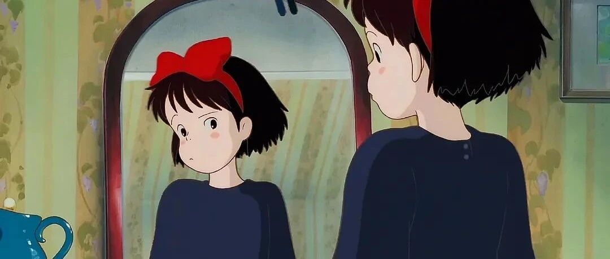

手帐分享｜说干就干，姐布局好了2024年计划！
点击关注秋秋很开心
每周一篇学习成长、退休干货

图：@网络
文：@秋秋
大家好，我是秋秋～
新的一年又和大家见面了！我已经做好了2024年计划和新的手帐体系，现在动力满满，每天就想着去完成和实现😁。
秋秋2024计划：
只有3件重要的事——大脑、身体和生活。

搞钱对我来说已经不是最重要的事了，大老王今年还给我开通了每月1万的亲密付，在合理范围内，我只负责花钱就行了。
不上班，没烦心事，我要做的就是...
大脑上：多读书，充实自己！
最近几年不用赚钱也是想着沉淀，自会有赚钱的时候。
上次回归说想把豆瓣TOP250图书看完，今年就从前100开始。


我整理好了书，发现前100里有60本已经读过，30本未读，那就每月2～3本慢慢品味。
当然也要把读书笔记整理出来，和大家一起进步！
除了阅读，我还想开展一个新技能。
之前学摄影，真的打开新世界的大门，不仅能赚钱，还能参加新活动、认识新朋友。


（领养活动和去寺庙生活）
拿着相机跑来跑去，既锻炼体力，一个人出门也兴致盎然。
今年的新技能是国画。
听了几节课我还挺喜欢，iPad就有画画软件，之前也有点基础，就从每周一幅开始吧！
身体上：健康，能量满满！
身体上希望自己身轻如燕！（开玩笑），能量满满就可以。
我的身高对应体重在100斤出头刚好。每周运动，家里有踏步机和划船机超方便。
其他的，多补充蛋白质、早睡早起，每个月徒步/骑行闲逛一次不多说。
生活上：保持现状，就很幸福！
这块我感觉自己足够幸运，即使我不成功不优秀，在家人的爱上也获得了100分。
有时候不想在网络上分享，也是现实里的幸福已超载。2024就保持现状，希望他们也健康快乐就行。
秋秋2024手帐体系：
今年我要全部用电子手帐来记录，可可爱爱的还省钱～


年度目标-提醒我今年要做的事：

月视图-写每天开心的小事：

周计划-做复盘和写日记：

还有打卡页和时间轴：


链接免费分享大家。
https://pan.baidu.com/s/1o6n0Fd8rvHEWQX5qiIMdlA?pwd=376y
提取码：376y
复制这段内容打开「百度网盘APP 即可获取」
希望2024年我们一起进步，我会尽量在公众号多多和大家见面，大家也要愉快幸福啊！
原创文章，转载请告知本人并标注来源
粉丝微信：qiuqiu5261
（朋友圈更新日常）
喜欢记得星标，让我们一起成长